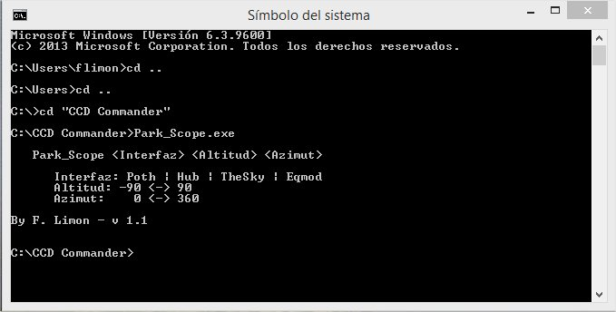
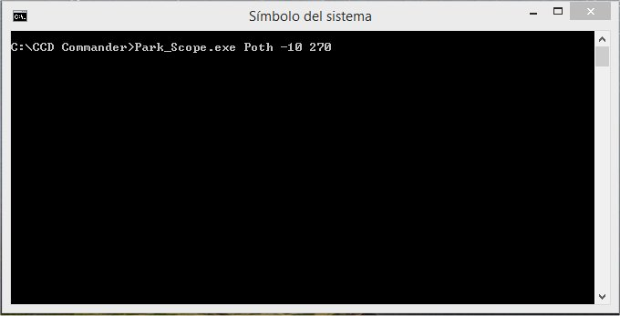
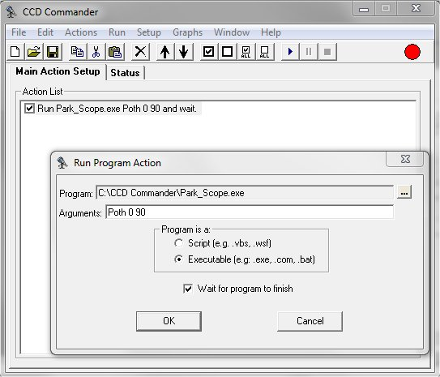

|
Park_Scope |
||
|
|
Versión 1.1 |
|
En ocasiones es necesario disponer de una utilidad que permita aparcar el telescopio de manera sencilla ya que la montura en si no dispone de tal mecanismo implantado.
La presente utilidad es un programa de consola Win32, que puede ejecutarse desde una ventana CMD (Símbolo del sistema) o desde otras aplicaciones, como puede ser el caso del CCD Commander.
Al ejecutar Park_Scope debe indicarse el interfaz a utilizar para comunicar con la montura del telescopio, así como la altitud y azimut donde queremos aparcar. Si lo ejecutamos sin parámetros o a falta de alguno, obtendremos la siguiente salida:

Como interfaz podemos utilizar Poth, Hub (Generic Hub), TheSky (TheSky6) y Eqmod.
En cuanto a las coordenadas de aparcamiento, la altitud puede estar comprendida entre -90º y 90º y el azimut entre 0º y 360º.
En ejemplo de ejecución desde una ventana CMD (Símbolo del sistema) sería:

En este caso, como puede verse en la captura anterior, vamos a utilizar Poth como interfaz de comunicación con la montura, y estamos indicando que queremos aparcar el telescopio apuntando a una altitud de -10º y en un azimut de 270º.
Si lo fuésemos a utilizar desde CCD Commander, deberemos configurar una acción Run External Program, seleccionado en el campo de Program el programa Park_Scope, y en el campo Arguments los parámetros a pasarle.
En el caso del ejemplo, usaremos Poth como interfaz y aparcaremos en ALT=0º y AZ=90º.
No debes olvidar indicar a CCD Commander que debe esperar a que finalice la ejecución del programa.

El programa lo podéis descargar de aquí.
Este programa ha sido compilado para funcionar con Microsoft .NET Framework 4.0, por lo que deberá verificar que dispone de esta versión o superior, y en su defecto, podrá descargarlo e instalarlo desde Microsoft.
Espero que este programita os guste y sea de utilidad.